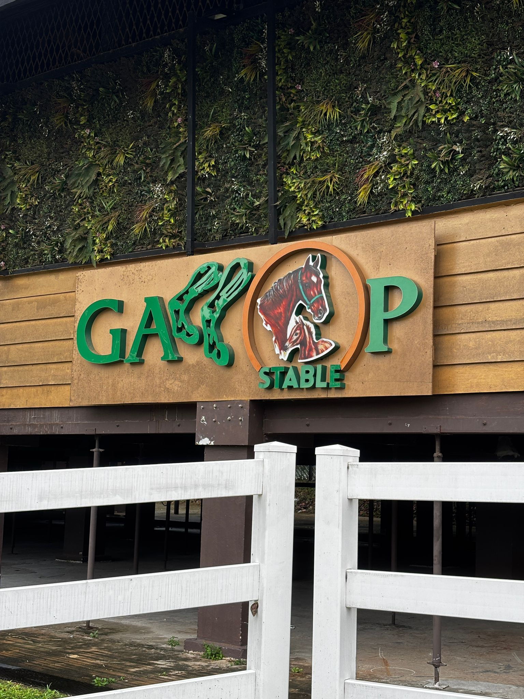

Gallop Stable
Our Story
Horse riding in Singapore for Everyone
Gallop Stable has been Singapore's trusted household name for horse riding for over two decades. What began with just 13 gentle ponies in Pasir Ris has grown into a thriving home for over 160 rescued racehorses, each given a second chance to live freely and bond with people of all ages. It is a space where horses meet you exactly where you are on your riding journey.
With no membership fees and a commitment to keeping horse riding accessible for all, Gallop Stable was built to remove barriers, not raise them. Here, rescued horses and ponies become partners in learning, confidence building, and quiet moments of joy.
From beginner riding lessons and nature-based trails to camps and bonding experiences for all ages, we open the world of horses to everyone. Whether you ride weekly or just once, every encounter is meaningful because riding is not only about technique. It is about trust, connection, and discovering the calm that lives between each breath and hoofbeat.
This is where riding is not just learnt, it is felt.


A Second Chance
A new life beyond the racetrack
Most of Gallop Stable's resident horses are ex-racehorses who came here for a second chance at life. Countless young and healthy racehorses are retired from racing every year because of injuries or a lack of racing ability. With no home to go to and no longer needed by their owners, many face uncertain futures.
Gallop Stable gives these horses a second chance by retraining suitable horses for riding activities, where they bring joy to our students and riders. Horses that are unable to take part because of injuries or temperament are also given a permanent home here, where they can enjoy green pastures and plenty of care from our staff and visitors.
Stable Gallery